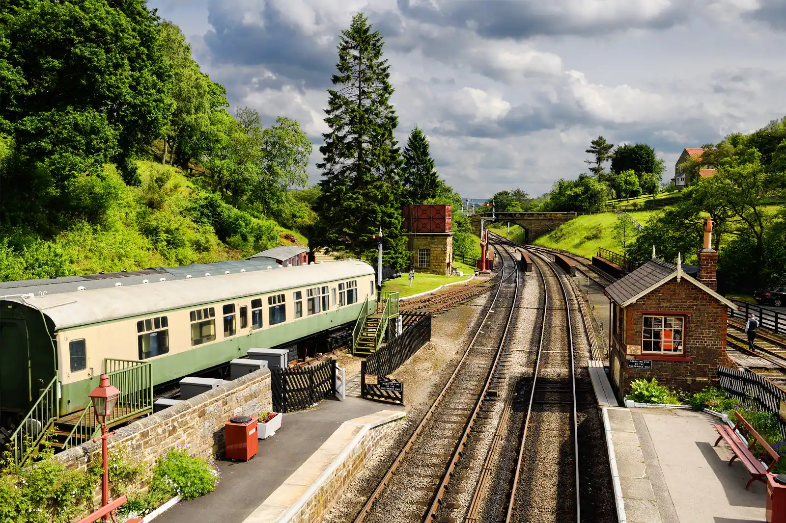
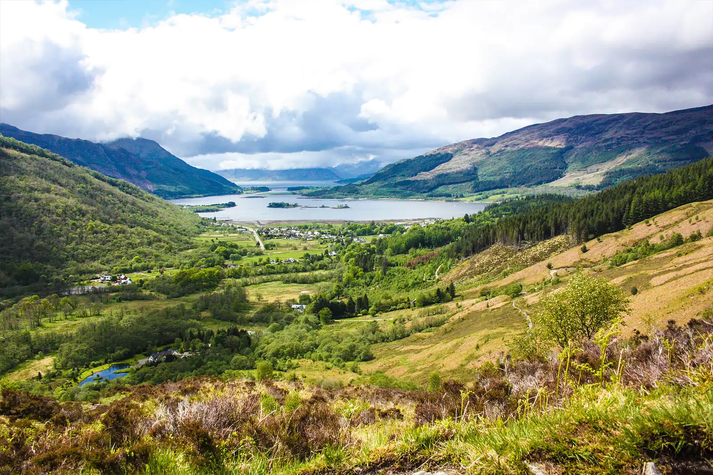
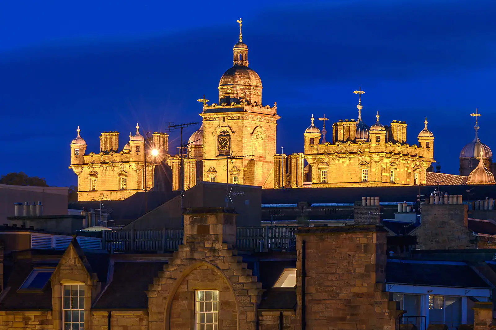

Traces
Big Ben, le palais de Westminster et, au-delà de Londres, les lieux de tournage d’Harry Potter.
Le Tower Bridge est-il la structure la plus célèbre de Londres ?
Big Ben
Big Ben est la tour de l’horloge du palais de Westminster et un symbole de Londres. Le palais, siège du Parlement britannique, fait face à la Tamise, entre le pont de Westminster et l’abbaye de Westminster.
Son nom officiel, d’abord Clock Tower (« la tour de l’Horloge »), est devenu Elizabeth Tower (« la tour Élisabeth ») en 2012, pour le jubilé de diamant d’Élisabeth II. On l’appelle couramment Big Ben (« le gros Ben »), qui est en fait le surnom de la cloche de 13,7 tonnes située au sommet. Seules les personnes qui habitent au Royaume-Uni peuvent visiter la tour, avec une autorisation.

L’ancien palais
En octobre 1834, un terrible incendie a détruit l’ancien palais qui abritait le Parlement depuis 1512. L’édifice servait aussi de résidence royale à Londres depuis Guillaume le Conquérant. Seule une petite partie a pu être sauvée : le Westminster Hall, les cloîtres et la crypte de la chapelle Saint-Étienne, ainsi que la Jewel Tower, une construction du XIVe siècle où étaient gardés les joyaux et l’or de la Couronne.
Le nouveau palais
Après l’incendie, 97 projets ont été proposés pour le nouvel édifice. Les architectes Charles Barry et Augustus Welby Pugin ont été choisis. En 1847, le palais était presque terminé, avec déjà 1 200 pièces, 11 cours et 3,5 kilomètres de couloirs.
Sa façade offre un très beau panorama, et ses pinacles dorés et ses statues de rois se reflètent dans le fleuve. Le palais est encadré par Big Ben et la Victoria Tower, une tour imposante qui conserve toutes les copies des lois du Parlement depuis 1497.
Mini-jeu : prenez le bus
Conduisez le bus rouge jusqu’à l’arrêt en suivant la route. Cliquez sur le plateau, puis utilisez les touches Z Q S D ou les flèches du clavier. Sur téléphone, utilisez les boutons ci-dessous.
Sur les traces d’Harry Potter
Dix lieux de tournage et d’inspiration de la saga, de Londres jusqu’en Écosse.
-
Londres : la gare de King’s Cross
Le Poudlard Express, qui emmène Harry pour la première fois à l’école des sorciers, a été filmé ici. Le quai 9¾ n’existe pas vraiment, mais vous trouverez le panneau et un chariot qui disparaît à moitié dans le mur, près de la boutique Harry Potter dans le hall de la gare. Il faut souvent faire la queue pour prendre une photo.
-
Londres : Leadenhall Market
Cette belle galerie marchande victorienne, près de la station de métro Monument, a servi de décor au Chemin de Traverse. Dans les films, les jeunes sorciers viennent y faire leurs achats et passent au Chaudron Baveur boire une bièraubeurre. Dans la vraie vie, ce « pub » est un cabinet d’opticien. Le quartier compte de bons restaurants et de jolies boutiques, mais évitez l’heure du déjeuner : la galerie est alors envahie par les employés en pause.
-
Banlieue de Londres : les studios Warner Bros
Les studios Harry Potter sont sans doute le meilleur endroit à visiter pour les fans. On y découvre comment les films ont été tournés, on parcourt de nombreux décors et on voit les costumes originaux des acteurs, ainsi que des démonstrations d’effets spéciaux et des maquettes.
-
Oxford : Christ Church
L’université d’Oxford possède de nombreux bâtiments aussi anciens que magnifiques. À Christ Church, vous découvrirez la salle qui a inspiré la Grande Salle où Harry et ses amis prennent leurs repas à Poudlard. Ce bâtiment du XVIe siècle a gardé tout son charme et se visite librement.
-
Northumberland : le château d’Alnwick
Le château d’Alnwick a joué un rôle important dans les films. Vous verrez l’endroit exact où Harry apprend à voler sur un balai, et vous pourrez même participer à une initiation au vol en balai. Le château a aussi servi de décor à Downton Abbey et à Robin des Bois.
-
Durham : la cathédrale
La cathédrale de Durham est l’un des plus beaux édifices médiévaux d’Angleterre. On la voit dans plusieurs scènes, dont celle où Harry, Hermione et Ron transforment des animaux en gobelets avec le sortilège « Fera Verto ». Des visites guidées ont lieu presque tous les jours pour environ 5 £.
-

North Yorkshire : la gare de Goathland
La gare de Pré-au-Lard est en réalité celle d’un village pittoresque des North York Moors, près de la ville balnéaire de Whitby. Construite en 1865, elle a gardé son charme d’époque. Des trains à vapeur circulent toujours sur les 38 kilomètres de voie entre Pickering et Whitby.
-

Écosse : Glencoe
C’est à Glencoe qu’était installée la cabane d’Hagrid dans le troisième film, Harry Potter et le prisonnier d’Azkaban. Le décor a été démonté, mais la vue depuis l’auberge Clachaig Inn, au-dessus de la vallée, rappellera des souvenirs aux fans.
-
Écosse : le viaduc de Glenfinnan
Au cœur des Highlands, ce viaduc de 30 mètres de haut surplombe le Loch Shiel. Les fans reconnaîtront le paysage de la ligne qui relie Londres à Pré-au-Lard. La voie ferrée est toujours en service, et le site est souvent une étape des excursions vers le Loch Ness.
-

Édimbourg : George Heriot’s School
Cette école privée n’apparaît pas à l’écran, mais Poudlard s’en serait inspiré : J.K. Rowling a écrit les premiers tomes dans des cafés tout proches. Des visites guidées sur le thème d’Harry Potter permettent de découvrir ces lieux d’inspiration.


Visiter les studios Warner Bros
Le prix du billet dépend de l’âge : 49,95 £ à partir de 16 ans, 39,95 £ de 5 à 15 ans, gratuit pour les 4 ans et moins.